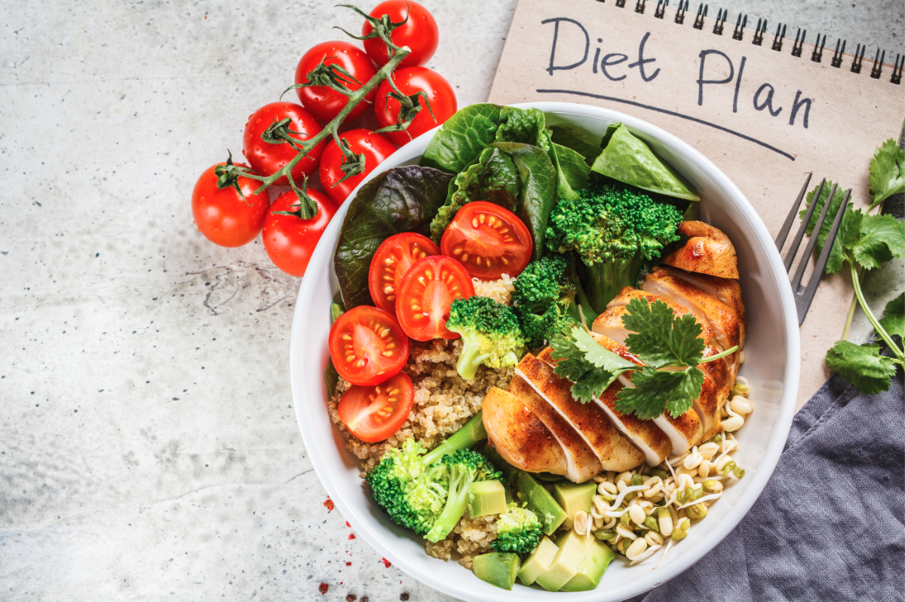
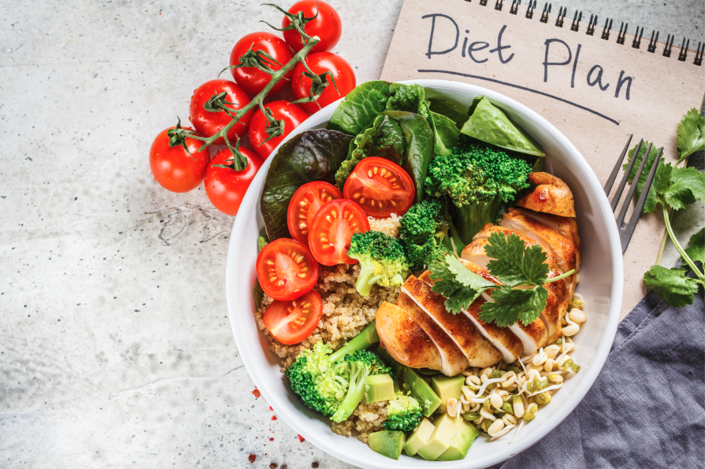

What should you eat?
Our eating habits directly determine our health. In our busy schedules and fast lives, we often end up eating as per convenience, rather than what is healthy. Many a times, we eat to please our taste buds, but remain quite unaware about the health hazards that this type of eating habit might pose. Every element is needed for your body, whether it is vitamins, minerals, proteins, carbohydrates, fibers or even fat (although choose the healthy ones). Each of these nutrients has their own individual roles to play in the physical and mental development. Healthy eating does not mean having only boiled meals, eating less, or saying no to fat. Healthy food habits mean nutritious eating, i.e. eating everything in the right amount and right way. Don’t completely exclude fats or overdo the fibers and proteins! By eating a balanced diet, we get all the nutrients that are necessary for a healthy living. These include proteins, vitamins, calcium, various minerals and above all a lot of energy that helps us in our day to day activities.
How much should you exercise?
Exercise is the best-kept secret in preventive medicine. Regular exercise provides essential protection against many of the diseases that plague our country. The key is to do enough and to do it often enough. For health, doctors should "prescribe" at least 30 minutes of moderate exercise or 15 minutes of intense exercise a day. There are many Benefits of regular physical activity. If you are regularly active, you can reduce your risk of a heart attack ,manage your weight better , have a lower blood cholesterol level , lower the risk of type 2 diabetes and some cancers, have lower blood pressure ,have stronger bones, muscles and joints and lower risk of developing osteoporosis ,lower your risk of falls ,recover better from periods of hospitalisation or bed rest ,feel better – with more energy, a better mood, feel more relaxed and sleep better. Research proves that it hels us develop A healthier state of mind,A number of studies have found that exercise helps depression. Exercise helps block negative thoughts or distract you from daily worries. Exercising with others provides an opportunity for increased social contact. Increased fitness may lift your mood and improve your sleep patterns. Exercise may also change levels of chemicals in your brain, such as serotonin, endorphins and stress hormones. Mix daily activities, formal workouts, and sports play to get the cardiometabolic exercise you need for health. And for best results, do some stretching nearly every day and some strength training two or three times a week.

MORE ARTICLES
 
